Mobile pages
The Version 7 web client is able to operate on a mobile phone using a dedicated design to the mobile web browser.
Although the technical repository is exactly the same, the navigation and the behavior of the mobile pages are slightly different.
- The size constraints of the mobile phones are not the same.
- The devices available on a mobile phone and the user interaction are not the same.
- The widgets used in the mobile pages are not the same.
- The connection constraints of mobile devices require enabling a disconnected mode that does not exist on the desktop web pages.
- No Classic mode is available on mobiles.
- Classic pages are available through Applications that are downloaded from the setup page when connecting for the first time. An application is designed as a dashboard that has the mobile check box selected.
This document details how mobile pages work.
NOTE THAT THE SCREENS MAY DIFFER BASED ON THE BROWSER USED.
| The first connection | Navigation principles | Current operations | Current operations |
| Input widgets available | Grid management | Disconnected mode and drafts management | Templates management |
The first connection on a mobile page
URL to be called
As in any web application, the Sage X3 Warehousing mobile dashboard requires to open a web address on the device browser. If the web server you connect to is called mywebserver with, for example service 8124; the URL to be opened will be:
http://mywebserver:8124/syracuse-mobile/html/mobile.html#startThis URL opens the portal dedicated to mobiles on the web server.
After the first connection is established, you can create shortcuts to this URL to obtain direct access to the functions.
Initial setup
| The first time users connect through a smartphone, this page will be displayed to allow users to enter their credentials. | 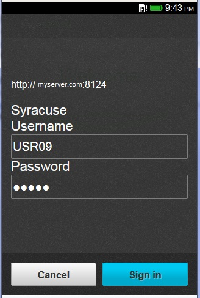 |
Application installation
| When the connection is set up, the next step is to install the applications. An
application is defined on the administration server as a mobile dashboard. The installed application will appear on the mobile phone, and a user will be able to select and use the right application. No applications are automatically installed the first time the user is connected to the device. A page will appear with an invitation to install the applications. | ||
| If the application installation is selected, the screen displays the list of available applications and the endpoints where they are available as shown on this screen. The user can select an application on at least one endpoint, and click the Add button. This step will install the first application that will appear on the first page instead of the icon that navigates to the application manager. | 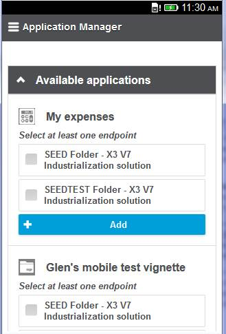 | |
| Installing a second application can be done by clicking the icon on the upper menu bar of the
page: 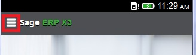 This opens the setting panel with the following choices:
| 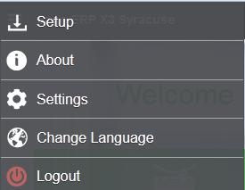 | |
| 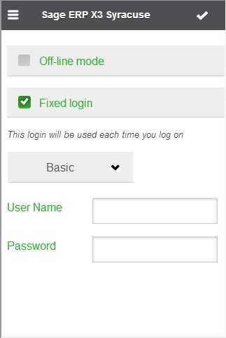 | |
The first screen shows the first page after installing an application. It includes:
After installing the four applications, the page will look similar to the second screen as shown. Any selection on one of the icons will display an intermediate menu or an activity page (usually a query). | 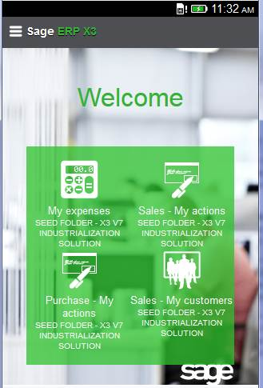 | |
Navigation principles
|
If an application that accesses several activities has been selected, a menu is displayed containing the
different activities available in this application. An activity corresponds to a menu item in the mobile
portal. Clicking the icon displays the page of the corresponding activity. When an activity is selected, the top bar will change and display the description of the current activity. Some additional icons may appear on the left of the top bar to perform local actions. The top left button remains available for the global navigation actions: Using this button will display the navigation panel that takes the user either to the homepage or to one of the installed applications: 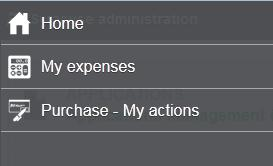 | 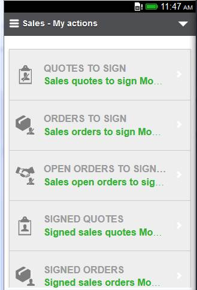 |
The triangle shown at the right of the upper bar provides access to contextual functions. Two entries are
present from the menu list:
| 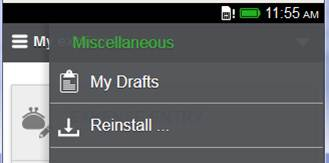 |
In addition to these standard actions, applicative actions may be available in the menu, as in the example shown above:
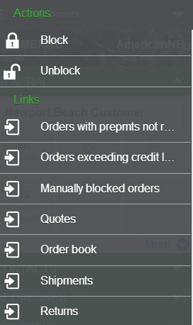
Common toolbar icons
The most common icons used by most of the mobile applications are the following:
| Left menu icon Used to open the left menu. | |
| (Right) Menu icon Used to open the right menu. This icon may also be used for other kinds of menus depending on the mobile application. | |
| Add/Create Used to create a new record. | |
| Edit Used to edit the record that is currently displayed. | |
| Delete Used to delete the current record. | |
| Ok/Save Used to accept a setting or to save the current changes. | |
| Abort/Back Cancel current modification or action. Move back to last page. |
Current operations on a mobile page
A mobile page is defined as a desktop page, but with some limitations (the number of fields must be smaller). If you consider a typical CRUD cycle of operations on an entity, the operation would have the following cycle:
- Preliminary list of the entities (the query facet) in which selections, filtering, and sorting operations are possible. The mobile will add the bookmark capability to these functions.
- Visualization of an entity with a detail facet.
- Modification of an entity with the edit facet. The main difference is that the transmission of data will only be done when an action is selected but not when the user navigates from one field to the next.
- Creation of a new entity through the + link present on the list page.
The following information describes these operations in detail:
Query
|
A query displays the list of items of the entity managed by the activity. The main difference with the
desktop page is that the number of information that can be displayed is limited for usability reasons.
At the top of the page, the + button provides access to the create operation on the corresponding entity. One of the features is the ability to mark some lines of the query as favorites by clicking the star at the end of the line. The star changes color to orange. The local cache of the mobile phone stores the list of favorites per entity. If this has been done at least once, a star appears on the top of the page to remind users that they have favorites. If they click on this star, a list is filtered to display only the favorite records. | 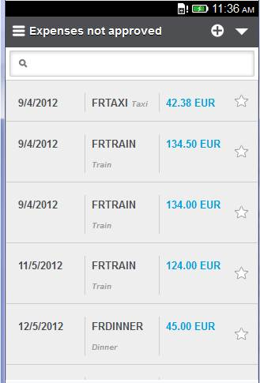 | 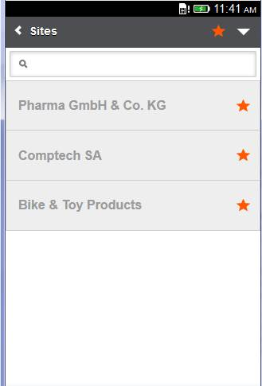 |
| The advanced menu provides access to additional entries such as the sorting and filtering options. |  |
| When the filtering option is selected, a page that displays the existing filters appears. Using the Add button allows you to create a new filter by selecting the column, the operator, and the filtering value. The different operators available are:
| 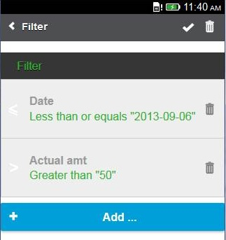 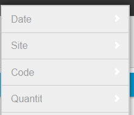 |
| When the sorting option is selected, a page that displays the existing columns appears. Clicking a column allows you to define the sorting order in ascending (first click) or descending mode (if a second click is done on the same column). | 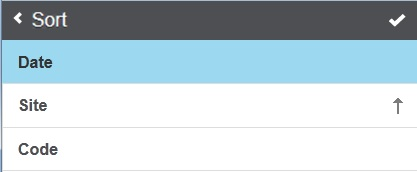 |
|
Another feature is the access to predefined selections on the query page associated with an entity. This is
presented as tabs as shown on the corresponding screen.
A search box is also available to search data in the current list by typing text. This search box can be located over the tabs (it will search on the entity regardless of the filter), or under the tab (the search will be filtered based on the current tab). | 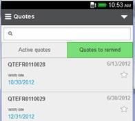 | 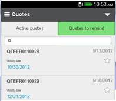 |
Multiple selections
| On a query page, you can have operations that apply to several lines. When this happens: | |||
| A dedicated "Select lines" item is available from the top right menu. | Using this selection action will allow you to select several lines. The selected lines are displayed in a different color and the number of selected lines is displayed on the top bar. | After the lines selection, clicking the Actions icon will display the list of actions that apply to the selected lines. The back icon allows you to return to the previous state. | When the action is selected, a page is displayed indicating the number of selected lines where a confirmation is requested. |
| 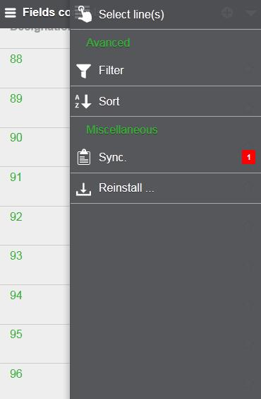 | 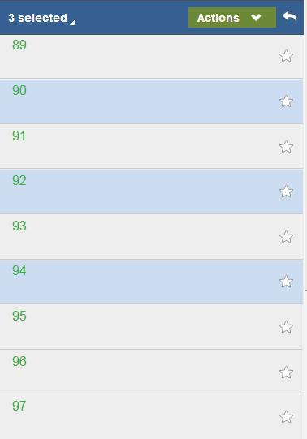 | 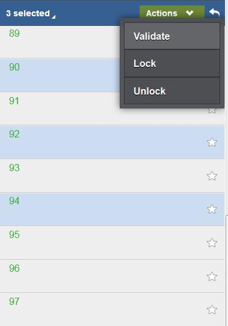 | 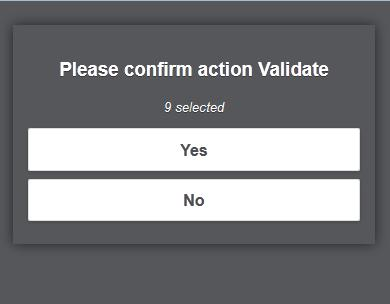 |
Details
The detail page displays the record selected from the query facet. Fields appear in blocks that can be
collapsed or expanded.
On the upper bar, you have access to several icons:
| 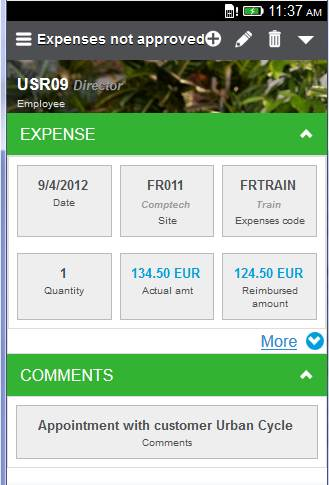 |
Edit
The edit page displays the record for possible modification.
On the upper bar, you have access to several icons:
| 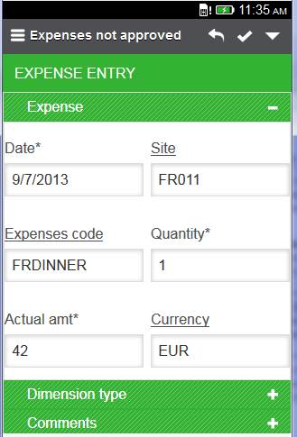 |
Input widgets available
The following widgets can be used when displaying or entering data.
| A date picker to select a date field. | 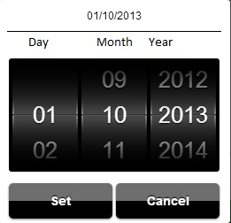 |
| A gauge widget that allows you to enter numeric values in a range by sliding the cursor. | 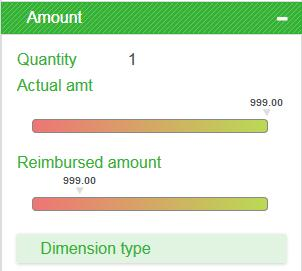 |
| A widget that allows you to display entered numeric values in a range on a gauge. | 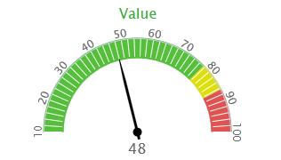 |
| Phones and email address widgets that allow you to phone or send an email by selecting the field. | 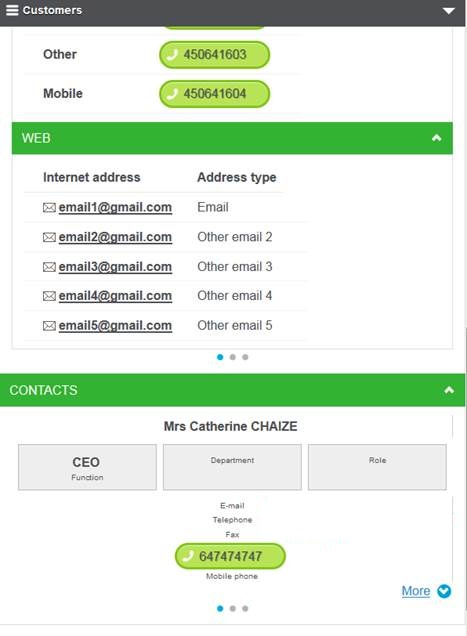 |
| A picture picking widget that allows you to select an image on the phone or to use the camera to take a picture. On an Android phone, clicking the Choose a file link opens the following windows, which provides access to the device. | 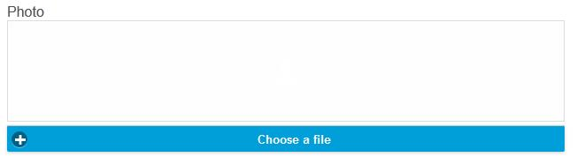 | 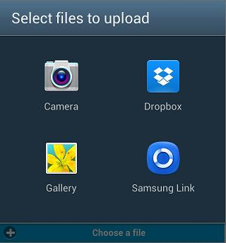 |
Grid management
When a grid is present in an edit page, the grid is first displayed. Depending on the orientation of the screen, a grid line can be presented on one or several physical lines as shown on the screens below:
| 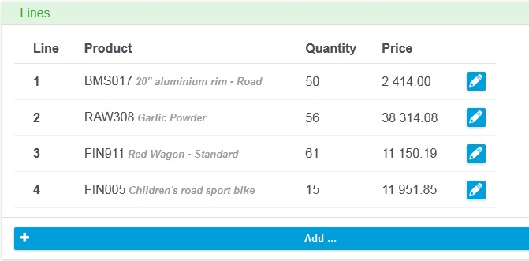 | 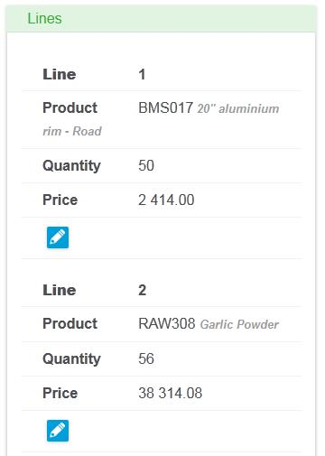 |
| Connected mode | Disconnected mode |
|---|---|
Online and offline data
The mobile client stores data on the device to safely handle the disconnections. This storage is done in three different instances:
- References on other tables (customer codes, item codes, tax codes, and so forth). These references are stored only if they have been bookmarked as favorites.
- The pending data input if the network is no longer available.
- The refused data input when an input error has been detected during the validation step.
The last two instances are the drafts. These drafts can be seen for every entity by clicking the triangle on the right side of the top bar. If drafts are present, a dedicated line appears on the list displaying a line that can be:
| 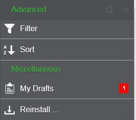 | 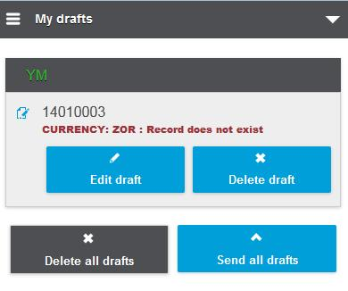 |
| 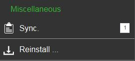 | |
Templates
This feature allows you to store frequently used combinations of field values inside a template. A template always belongs to a specified entity and there can be an arbitrary number of templates per entity.
A good example to describe this feature is the task of entering expenses.
Entering expenses requires you to set several mandatory fields, most of them will be set to the same value
every time you enter an expense, e.g:
Once you have entered all the data, you end up with a result similar to the one in the screenshot. | 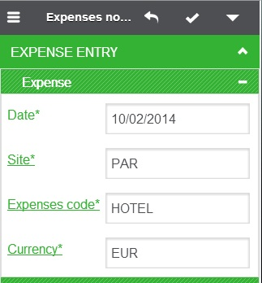 |
|
To remember your work in case you need to create another expense with similar data, open the right panel.
In the right panel, there is a menu item named "Templates". This menu item will open the template administration page. | 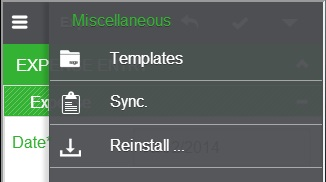 |
| Once in the template administration page, you can enter a name for your new template and save it using the blue save button right of the input field. | 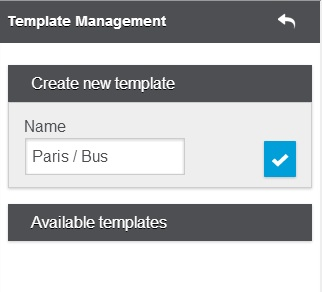 |
|
In the next step, create a new expense, do not enter any value into the mandatory input fields.
Open the right menu. You will notice that the template menu item signals that there is one template available for the current entity. Open the template administration. | 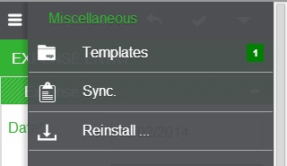 |
|
In the template administration, you will notice that you can once again create another template.
Also, in the lower part of the page, the template that you created previously shows up. By using the "Apply" button of your template, all input fields of your newly created expense will be filled with the values remembered in the template. | 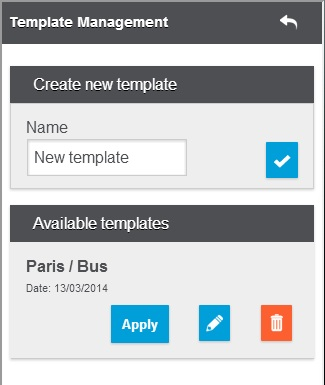 |
|
After applying the template, you end up again in the expense entry page where all the data has been
automatically entered into the mandatory fields. You can now go on and fill additional input fields or just save the expense without having to type a single character. |